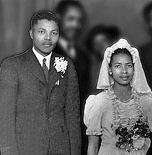
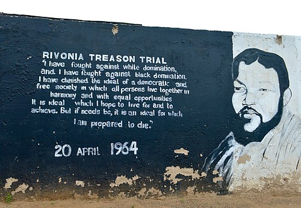
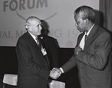

Revolutionary Activity
Mandela began studying law at the University of the Witwatersrand, where he was the only black African student and faced racism. There, he befriended liberal and communist European, Jewish, and Indian students, among them Joe Slovo and Ruth First. Becoming increasingly politicised, in August 1943 Mandela marched in support of a successful bus boycott to reverse fare rises. Joining the ANC, he was increasingly influenced by Sisulu, spending time with other activists at Sisulu's Orlando house, including his old friend Oliver Tambo. In 1943, Mandela met Anton Lembede, an ANC member affiliated with the "Africanist" branch of African nationalism, which was virulently opposed to a racially united front against colonialism and imperialism or to an alliance with the communists. Despite his friendships with non-blacks and communists, Mandela embraced Lembede's views, believing that black Africans should be entirely independent in their struggle for political self-determination
Read More

Rivonia Trial
The Rivonia Trial took its name from Rivonia, the suburb of Johannesburg where leaders had been arrested (and documents discovered) at Liliesleaf Farm, privately owned by Arthur Goldreich, on 11 July 1963. Various people and groups, including the African National Congress, had been using the farm as a hideout. Among others, Nelson Mandela had moved onto the farm in October 1961 and evaded security police while masquerading as a gardener and cook called David Motsamayi (meaning "David the walker").
Read More

End of apartheid
In May 1990, Mandela led a multiracial ANC delegation into preliminary negotiations with a government delegation of 11 Afrikaner men. Mandela impressed them with his discussions of Afrikaner history, and the negotiations led to the Groot Schuur Minute, in which the government lifted the state of emergency.In August, Mandela—recognising the ANC's severe military disadvantage—offered a ceasefire, the Pretoria Minute, for which he was widely criticised by MK activists. He spent much time trying to unify and build the ANC, appearing at a Johannesburg conference in December attended by 1600 delegates, many of whom found him more moderate than expected. At the ANC's July 1991 national conference in Durban, Mandela admitted that the party had faults and announced his aim to build a "strong and well-oiled task force" for securing majority rule. At the conference, he was elected ANC President, replacing the ailing Tambo, and a 50-strong multiracial, mixed gendered national executive was elected.
Read More